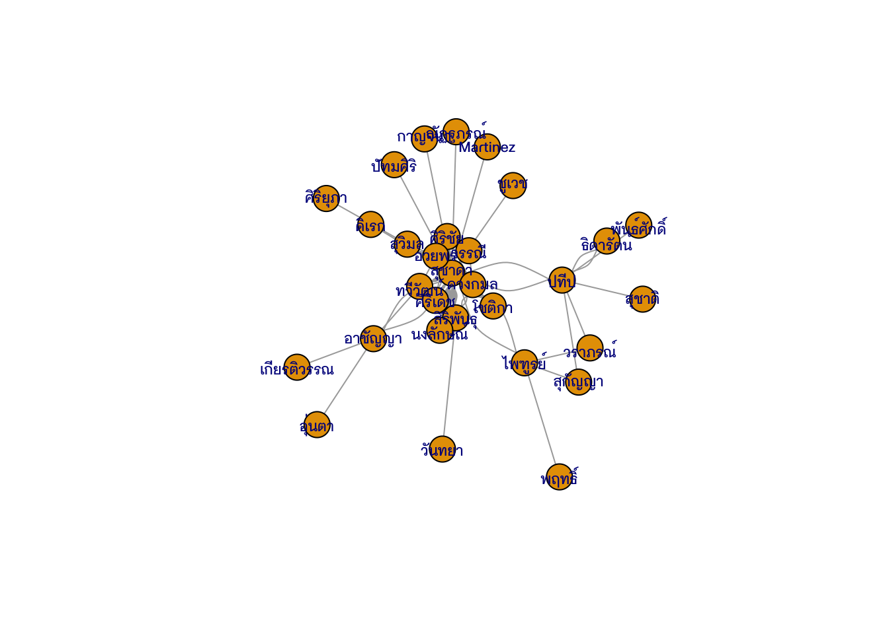
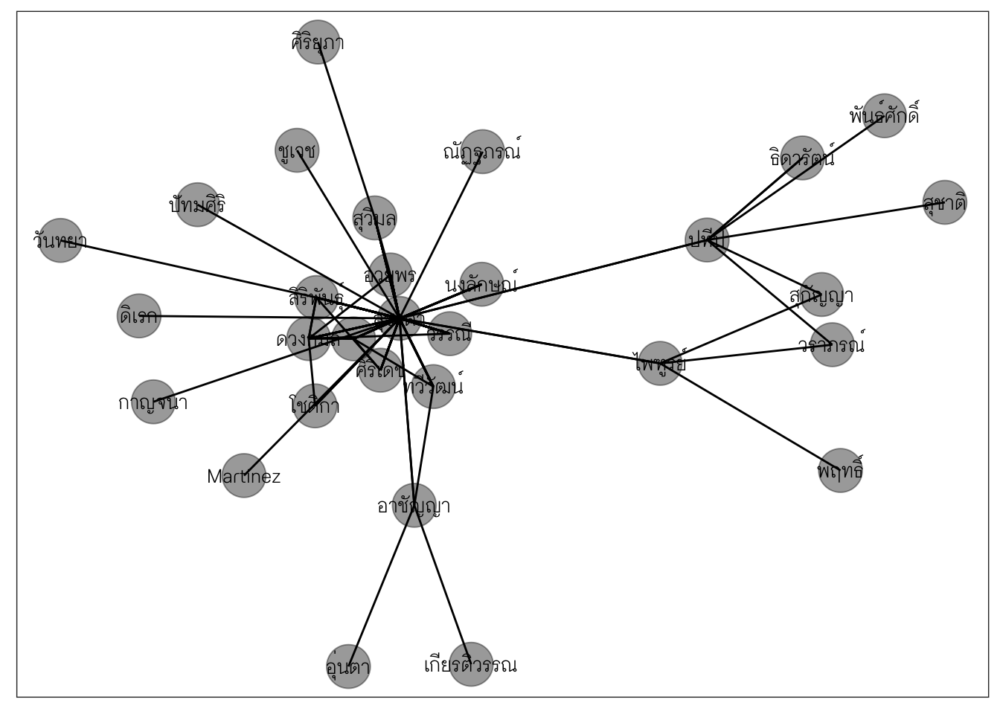
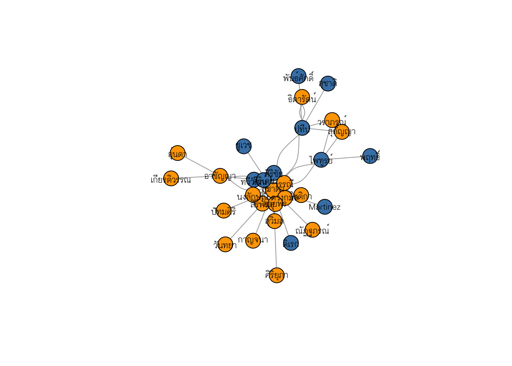

library(tidyverse)Social Network Visualization
บทเรียนนี้จะกล่าวถึงมโนทัศน์และการประยุกต์ใช้ network analysis สำหรับการวิจัยและงานด้านวิทยาการข้อมูลการศึกษา
Create
Analyze
Visualize
1 What are Networks?
network graph เป็นแผนภาพที่มีวัตถุประสงค์หลักคือ เพื่อแสดงเครือข่ายการเชื่อมต่อระหว่างหน่วยข้อมูล ซึ่งอาจเป็นบุคคล ผลงานทางวิชาการ/นวัตกรรม หรือองค์กร
เส้นเชื่อมระหว่างหน่วยข้อมูลหรือการไม่มีเส้นเชื่อมระหว่างหน่วยข้อมูลในแผนภาพ network บ่งชี้รูปแบบความสัมพันธ์ระหว่างหน่วยข้อมูลภายใต้บริบทที่ทำการศึกษา การวิเคราะห์เครือข่ายนี้มีการประยุกต์ใช้กับหลายบริบททั้งด้านสังคมศาสตร์ วิทยาศาสตร์ ไปจนถึงการแพทย์ ในบริบททางสังคมศาสตร์การวิเคราะห์เครือข่ายที่ใช้มากคือการวิเคราะห์ความสัมพันธ์ระหว่างบุคคลภายใต้บริบทหนึ่ง ๆ จึงมักเรียกการวิเคราะห์ดังกล่าวว่า การวิเคราะห์เครือข่ายสังคม (social network analysis)
แผนภาพ network แต่ละแผนภาพมีส่วนประกอบสำคัญ 2 ส่วนได้แก่
จุดยอด (vectices หรือ nodes) ที่ใช้แทนหน่วยข้อมูล
เส้นเชื่อม (edges) ที่ใช้แทนความสัมพันธ์ระหว่างหน่วยข้อมูล
2 Input Data and igraph object
ชุดข้อมูลที่จะนำมาใช้ในการวิเคราะห์เครือข่ายจำแนกได้เป็นสองลักษณะ ตามโครงสร้างของข้อมูลได้แก่
- Adjacency Matrix ซึ่งมีลักษณะเป็นเมทริกซ์ที่แถวและคอลัมน์เป็นจุดยอด และค่าภายในเมทริกซ์มีค่าเป็นไปได้สองค่าได้แก่ 0,1 โดย 0 หมายถึง ไม่มีเส้นเชื่อมระหว่างจุดยอด และ 1 หมายถึง มีเส้นเชื่อมระหว่างจุดยอด จากชุดข้อมูลนี้สามารถนำไปทำการวิเคราะห์เพื่อสร้างข้อมูลเชิงลึกที่อยู่เบื้องหลัง เช่น โครงสร้างของเครือข่าย ความสำคัญหรืออิทธิพลของจุดยอดหลัก
ตัวอย่าง adjacency matrix
A B C D
A 0 1 1 0
B 1 0 1 0
C 1 1 0 1
D 0 0 1 0- Edgelist มีลักษณะเป็นตารางสองคอลัมน์ และแต่ละแถวแสดงการเชื่อมโยงกันระหว่างจุดยอดสองจุดในแต่ละคอลัมน์
ตัวอย่าง edgelist
from to
1 A B
2 B C
3 C D
4 A D2.1 Visualization library
มี library หลายตัวที่สามารถใช้สร้าง network visualization ได้ บทเรียนนี้จะแนะนำสองตัวได้แก่ {igraph} และ {ggraph} (Csardi and Nepusz 2023)
## install.packages("igraph")
## install.packages("ggraph")
library(igraph)
library(ggraph)2.2 igraph objects
การใช้ {igraph} ขั้นตอนแรกคือการสร้าง igraph object ซึ่งสามารถสร้างได้จากทั้ง adjacency matrix หรือ edgelist จากชุดข้อมูลข้างต้นเราสามารถ convert เมทริกซ์และชุดข้อมูลทั้งสองให้เป็น igraph object ได้ดังนี้
- สร้าง igraph จาก adjacency matrix
g <- graph_from_adjacency_matrix(mat, mode = "undirected")- สร้าง igraph จาก edgelist
g <- graph_from_edgelist(as.matrix(edges), directed = F)
gIGRAPH 667a8f6 UN-- 4 4 --
+ attr: name (v/c)
+ edges from 667a8f6 (vertex names):
[1] A--B B--C C--D A--Digraph ให้รายละเอียดหลายส่วนเกี่ยวกับ network ที่สร้างขึ้นจากชุดข้อมูลดังนี้
บรรทัดแรก ระบุว่า มีจุดยอด (vertex) จำนวน 4 จุด และมีเส้นเชื่อมจำนวน 4 เส้นเชื่อม
บรรทัดที่สอง ระบุถึงตัวแปรที่ใช้เป็น attribute ของ network ในที่นี้คือ
name (v/c)แปลว่าตอนนี้nameถูกใช้เป็น attribute ของจุดยอด และ attribute นี้เป็นข้อมูลแบบจัดประเภทบรรทุดที่สาม ระบุถึงเส้นเชื่อมของ network
3 Dataset: data_AJ suchada.xlsx
เราจะใช้ชุดข้อมูลวิทยานิพนธ์ภายใต้การดูแลของ รศ.ดร.สุชาดา บวรกิติวงศ์ เป็นชุดข้อมูลประกอบการเรียนในวันนี้ก่อน
library(readxl)
thesis_data <- read_excel('/Users/choat/Documents/GitHub/datakruroo.github.io/DataVisualization/week03/data_AJ suchada.xlsx')
glimpse(thesis_data)Rows: 55
Columns: 26
$ code <dbl> 1, 2, 3, 4, 5, 6, 7, 8, 9, 10, 11, 12, 13, 14, 15, 1…
$ thesisnameTH <chr> "การเปรียบเทียบประสิทธิภาพของโมเดลโค้งพัฒนาการ ที่มีตัวแปรแฝง …
$ thesisnameEN <chr> "A comparision of efficiency of latent growth curve,…
$ name <chr> "สมถวิล", "พัชรพร", "อภิรดี", "อาภรณ์", "กุสุมา", "มาลัยพร",…
$ surname <chr> "วิจิตรวรรณา", "เทอดธรรมไพศาล", "ปราสาททรัพย์", "พลเสน",…
$ depart <chr> "การวัดผลทางการศึกษา", "วิจัยการศึกษา", "วิธีวิทยาการวิจัยการศึ…
$ edu <dbl> 2, 1, 2, 1, 1, 1, 1, 1, 1, 1, 2, 2, 1, 1, 2, 2, 1, 2…
$ advisor <chr> "ศิริชัย กาญจนวาสี", "สุชาดา บวรกิติวงศ์", "สุชาดา บวรกิติวงศ์",…
$ co_advisor <chr> "สุชาดา บวรกิติวงศ์", NA, "วรรณี แกมเกตุ", "สิริพันธุ์ สุวรรณมรร…
$ commitee1 <chr> "ทวีวัฒน์ ปิตยานนท์", "นงลักษณ์ วิรัชชัย", "สิริพันธุ์ สุวรรณมรรคา",…
$ commitee2 <chr> "ศิริเดช สุชีวะ", NA, "ศิริเดช สุชีวะ", NA, NA, NA, NA, NA, …
$ commitee3 <chr> NA, NA, NA, NA, NA, NA, NA, NA, NA, NA, NA, NA, NA, …
$ externalCommittee <chr> "ผจงจิต อินทสุวรรณ", "วันทนา วงศ์ศิลปภิรมย์", "รัตนา ศิริพานิช",…
$ year <dbl> 2543, 2550, 2550, 2550, 2551, 2551, 2551, 2552, 2552…
$ absTH <chr> "เปรียบเทียบประสิทธิภาพของโมเดลการวัดการเปลี่ยนแปลงระยะยาว …
$ absEN <chr> "To compare the efficiency of latent growth curve mo…
$ keyEN1 <chr> "univariate Longtitudinal change", "effectiveness/bu…
$ keyEN2 <chr> "multivariate longitudinal change", NA, "Multilevel …
$ keyEN3 <chr> "latent growth curve models", NA, NA, "develop guide…
$ keyEN4 <chr> "multilevel models", NA, NA, "Royal Thai Navy", NA, …
$ keyEN5 <chr> "quasi-simplex models", NA, NA, NA, NA, NA, NA, NA, …
$ software1 <chr> "HLM", "LISREL", "Mplus", "SPSS", "SPSS", "LISREL", …
$ software2 <chr> "EQS", NA, NA, NA, NA, NA, NA, NA, NA, NA, NA, "MPLU…
$ software3 <chr> NA, NA, NA, NA, NA, NA, NA, NA, NA, NA, NA, "HLM", N…
$ DV <chr> "ประสิทธิภาพของโมเดล", "ประสิทธิผลของโมเดลโรงเรียนวิถีพุทธ",…
$ mainStat <chr> "HLM,SEM,Latent Growth Curve Model", "MANOVA, Path a…ข้อมูลเบื้องต้นของชุดข้อมูล
p <- thesis_data %>%
group_by(year) %>%
count() %>%
ggplot(aes(year, n))+
geom_line(linewidth = 1)+
scale_x_continuous(breaks = 2542:2556)+
scale_y_continuous(breaks=1:10)+
theme_light()+
theme(panel.grid.minor = element_blank())clean ข้อมูลนิดหน่อยเพื่อให้ชื่อของอาจารย์ที่ปรึกษา ที่ปรึกษาร่วม และกรรมการถูกต้องก่อน
thesis_data <- thesis_data %>%
mutate(commitee1 = str_replace(commitee1,"วรรณี แกมเกตุ", "วรรณี แกมเกตุ")) %>%
mutate(commitee1 = str_replace(commitee1,"วราภรณ์ บวรศิริ", "วราภรณ์ บวรศิริ")) %>%
mutate(commitee1 = str_replace(commitee1,"สุวัฒนา สุวรรณเขตนิคม", "สิริพันธุ์ สุวรรณมรรคา")) %>%
mutate(commitee1 = str_replace(commitee1,"สุวิมล ว่องวาณิช", "สุวิมล ว่องวาณิช")) %>%
mutate(commitee2 = str_replace(commitee2,"สุวัฒนา สุวรรณเขตนิคม", "สิริพันธุ์ สุวรรณมรรคา")) %>%
mutate(commitee2 = str_replace(commitee2,"เอมอร จังศิริพรปกรณ์", "โชติกา ภาษีผล")) %>%
mutate(commitee3 = str_replace(commitee3,"เอมอร จังศิริพรปกรณ์", "โชติกา ภาษีผล")) %>%
mutate(commitee3 = str_replace(commitee3,"สุวัฒนา สุวรรณเขตนิคม", "สิริพันธุ์ สุวรรณมรรคา"))ชุดข้อมูลยังมีข้อมูลเกี่ยวกับ mainStat คำสำคัญ และ software ที่น่าจะเอามาทำ network ได้อีกด้วย
thesis_data %>%
select(code, year, depart, mainStat, starts_with("software"), starts_with("key")) %>%
head()# A tibble: 6 × 12
code year depart mainStat software1 software2 software3 keyEN1 keyEN2 keyEN3
<dbl> <dbl> <chr> <chr> <chr> <chr> <chr> <chr> <chr> <chr>
1 1 2543 การวัด… HLM,SEM… HLM EQS <NA> univa… multi… laten…
2 2 2550 วิจัยกา… MANOVA,… LISREL <NA> <NA> effec… <NA> <NA>
3 3 2550 วิธีวิทย… CFA, M… Mplus <NA> <NA> team … Multi… <NA>
4 4 2550 วิจัยกา… MANOVA SPSS <NA> <NA> Multi… moral… devel…
5 5 2551 วิจัยกา… Discrim… SPSS <NA> <NA> Discr… <NA> <NA>
6 6 2551 วิจัยกา… Multi-g… LISREL <NA> <NA> virtu… causa… LISRE…
# ℹ 2 more variables: keyEN4 <chr>, keyEN5 <chr>4 การเตรียมข้อมูล
ลองสร้าง network เพื่อแสดงเครือข่ายของคำสำคัญของวิทยานิพนธ์ที่เป็นข้อมูลในชุดข้อมูล ก่อนจะทำการวิเคราะห์หรือสร้าง network เราจะต้องเตรียม igraph object ของชุดข้อมูลคำสำคัญนี้ก่อน
เราจะต้องออกแบบ network ของเราก่อนที่จะสร้าง igraph object การออกแบบนี้จะต้องสัมพันธ์กับคำถามวิจัยหรือวัตถุประสงค์ของการวิเคราะห์ ตัวอย่างแรกเราจะทำง่าย ๆ ก่อน โดยจำสร้างเครือข่ายของอาจารย์ที่ปรึกษา ที่ปรึกษาร่วม และกรรมการก่อน ข้อมูลนี้ไม่ต้องจัดกระทำข้อความหมายก็ใช้ได้เลย
จุดยอดคือ อาจารย์ที่ปรึกษา ที่ปรึกษาร่วม และกรรมการ
เส้นเชื่อมคือ ความสัมพันธ์ระหว่างอาจารย์
teacher_network <- thesis_data %>%
select(code, year, advisor, co_advisor, starts_with("commitee"))
teacher_network# A tibble: 55 × 7
code year advisor co_advisor commitee1 commitee2 commitee3
<dbl> <dbl> <chr> <chr> <chr> <chr> <chr>
1 1 2543 ศิริชัย กาญจนวาสี สุชาดา บวรกิติวงศ์ ทวีวัฒน์ ปิตยานนท์ ศิริเดช สุชี… <NA>
2 2 2550 สุชาดา บวรกิติวงศ์ <NA> นงลักษณ์ วิรัชชัย <NA> <NA>
3 3 2550 สุชาดา บวรกิติวงศ์ วรรณี แกมเกตุ สิริพันธุ์ สุวรรณม… ศิริเดช สุชี… <NA>
4 4 2550 สุชาดา บวรกิติวงศ์ สิริพันธุ์ สุวรรณมรรคา <NA> <NA> <NA>
5 5 2551 สุชาดา บวรกิติวงศ์ วรรณี แกมเกตุ <NA> <NA> <NA>
6 6 2551 สุชาดา บวรกิติวงศ์ ศิริเดช สุชีวะ <NA> <NA> <NA>
7 7 2551 สุชาดา บวรกิติวงศ์ สิริพันธุ์ สุวรรณมรรคา <NA> <NA> <NA>
8 8 2552 สุชาดา บวรกิติวงศ์ วรรณี แกมเกตุ <NA> <NA> <NA>
9 9 2552 สุชาดา บวรกิติวงศ์ วรรณี แกมเกตุ <NA> <NA> <NA>
10 10 2552 สุชาดา บวรกิติวงศ์ <NA> วรรณี แกมเกตุ <NA> <NA>
# ℹ 45 more rowsคราวนี้เราจะต้องทำข้อมูลให้เป็นรูปแบบ adjacency หรือ edgelist ก่อน ในกรณีนี้เราทำเป็น edgelist น่าจะสะดวกกว่า
teacher_network_edgelist <- teacher_network %>%
pivot_longer(cols = c("co_advisor",starts_with("commitee")),
names_to = "role",
values_to = "name") %>%
drop_na() %>%
## ตัดนามสกุลออก
mutate(advisor = str_remove(advisor, "\\s.*"),
name = str_remove(name, "\\s.*")) %>%
mutate(name = str_replace(name, "Professor","Martinez"))
teacher_network_edgelist# A tibble: 125 × 5
code year advisor role name
<dbl> <dbl> <chr> <chr> <chr>
1 1 2543 ศิริชัย co_advisor สุชาดา
2 1 2543 ศิริชัย commitee1 ทวีวัฒน์
3 1 2543 ศิริชัย commitee2 ศิริเดช
4 2 2550 สุชาดา commitee1 นงลักษณ์
5 3 2550 สุชาดา co_advisor วรรณี
6 3 2550 สุชาดา commitee1 สิริพันธุ์
7 3 2550 สุชาดา commitee2 ศิริเดช
8 4 2550 สุชาดา co_advisor สิริพันธุ์
9 5 2551 สุชาดา co_advisor วรรณี
10 6 2551 สุชาดา co_advisor ศิริเดช
# ℹ 115 more rowsจากนั้นแปลงชุดข้อมูล edgelist ให้เป็น igraph object
teacher_network_igraph <- graph_from_edgelist(teacher_network_edgelist %>%
select(advisor, name) %>%
as.matrix(),
directed = F)
teacher_network_igraphIGRAPH 100b149 UN-- 30 125 --
+ attr: name (v/c)
+ edges from 100b149 (vertex names):
[1] ศิริชัย --สุชาดา ศิริชัย --ทวีวัฒน์ ศิริชัย --ศิริเดช สุชาดา--นงลักษณ์
[5] สุชาดา--วรรณี สุชาดา--สิริพันธุ์ สุชาดา--ศิริเดช สุชาดา--สิริพันธุ์
[9] สุชาดา--วรรณี สุชาดา--ศิริเดช สุชาดา--สิริพันธุ์ สุชาดา--วรรณี
[13] สุชาดา--วรรณี สุชาดา--วรรณี สุชาดา--ณัฏฐภรณ์ สุชาดา--สุวิมล
[17] สุชาดา--โชติกา ศิริชัย --สุชาดา สุชาดา--สิริพันธุ์ สุชาดา--อวยพร
[21] สุชาดา--สิริพันธุ์ สุชาดา--อวยพร สุชาดา--นงลักษณ์ สุชาดา--สุวิมล
[25] สุชาดา--วรรณี สุชาดา--Martinez สุชาดา--อวยพร สุชาดา--วรรณี
[29] สุชาดา--ดวงกมล สุชาดา--ปทีป
+ ... omitted several edgesอีกวิธีหนึ่งหากเรามีข้อมูลเป็น tibble หรือ data.frame เราสามารถใช้ graph_from_data_frame() ก็ได้ กรณีนี้จะไม่ต้องแปลงเป็น matrix
teacher_network_igraph <- graph_from_data_frame(teacher_network_edgelist %>%
select(advisor, name),
directed = F)
teacher_network_igraph IGRAPH 56e415d UN-- 30 125 --
+ attr: name (v/c)
+ edges from 56e415d (vertex names):
[1] ศิริชัย --สุชาดา ศิริชัย --ทวีวัฒน์ ศิริชัย --ศิริเดช สุชาดา--นงลักษณ์
[5] สุชาดา--วรรณี สุชาดา--สิริพันธุ์ สุชาดา--ศิริเดช สุชาดา--สิริพันธุ์
[9] สุชาดา--วรรณี สุชาดา--ศิริเดช สุชาดา--สิริพันธุ์ สุชาดา--วรรณี
[13] สุชาดา--วรรณี สุชาดา--วรรณี สุชาดา--ณัฏฐภรณ์ สุชาดา--สุวิมล
[17] สุชาดา--โชติกา ศิริชัย --สุชาดา สุชาดา--สิริพันธุ์ สุชาดา--อวยพร
[21] สุชาดา--สิริพันธุ์ สุชาดา--อวยพร สุชาดา--นงลักษณ์ สุชาดา--สุวิมล
[25] สุชาดา--วรรณี สุชาดา--Martinez สุชาดา--อวยพร สุชาดา--วรรณี
[29] สุชาดา--ดวงกมล สุชาดา--ปทีป
+ ... omitted several edges5 การสำรวจ Network เบื้องต้น
จะเห็นว่าในชุดข้อมูลจริงถึงแม้จะเป็นข้อมูลขนาดเล็กแต่เมื่อเรียก igraph object ขึ้นมาก็มีรายละเอียดจำนวนมากที่พิจารณายาก {igraph} มีฟังก์ชันที่ช่วยให้ผู้วิเคราะห์ทราบรายละเอียดเกี่ยวกับข้อมูลพื้นฐานของ network ได้ง่ายขึ้น ดังนี้
- เรียกดูจุดยอด
## จำนวนจุดยอดทั้งหมด
gorder(teacher_network_igraph )[1] 30## เรียกดูจุดยอด
V(teacher_network_igraph ) %>% names() %>% head(20) [1] "ศิริชัย" "สุชาดา" "ปทีป" "ไพฑูรย์" "ดวงกมล" "อาชัญญา"
[7] "สิริพันธุ์" "สุวิมล" "ทวีวัฒน์" "ศิริเดช" "นงลักษณ์" "วรรณี"
[13] "ณัฏฐภรณ์" "โชติกา" "อวยพร" "Martinez" "วราภรณ์" "สุกัญญา"
[19] "ธิดารัตน์" "พฤทธิ์" - เรียกดูเส้นเชื่อม
E(teacher_network_igraph)+ 125/125 edges from 56e415d (vertex names):
[1] ศิริชัย --สุชาดา ศิริชัย --ทวีวัฒน์ ศิริชัย --ศิริเดช สุชาดา--นงลักษณ์
[5] สุชาดา--วรรณี สุชาดา--สิริพันธุ์ สุชาดา--ศิริเดช สุชาดา--สิริพันธุ์
[9] สุชาดา--วรรณี สุชาดา--ศิริเดช สุชาดา--สิริพันธุ์ สุชาดา--วรรณี
[13] สุชาดา--วรรณี สุชาดา--วรรณี สุชาดา--ณัฏฐภรณ์ สุชาดา--สุวิมล
[17] สุชาดา--โชติกา ศิริชัย --สุชาดา สุชาดา--สิริพันธุ์ สุชาดา--อวยพร
[21] สุชาดา--สิริพันธุ์ สุชาดา--อวยพร สุชาดา--นงลักษณ์ สุชาดา--สุวิมล
[25] สุชาดา--วรรณี สุชาดา--Martinez สุชาดา--อวยพร สุชาดา--วรรณี
[29] สุชาดา--ดวงกมล สุชาดา--ปทีป ปทีป --วราภรณ์ ปทีป --สุกัญญา
[33] ปทีป --ธิดารัตน์ สุชาดา--ทวีวัฒน์ ศิริชัย --สุชาดา สุชาดา--ศิริเดช
[37] สุชาดา--ทวีวัฒน์ ศิริชัย --สุชาดา
+ ... omitted several edges- quick plot
ใน igraph มีฟังก์ชัน plot() ซึ่งเป็น generic function สำหรับสร้าง network เราสามารถสร้าง network อย่างไว ๆ ได้ดังนี้เลย
plot(teacher_network_igraph,
vertex.label.family = "ChulaCharasNew",
vertex.label.cex = 0.8,
vertex.label.font = 2)
จะเห็นว่าแผนภาพดังกล่าวดูยังไม่รู้เรื่อง ปกติเราจะต้องปรับแต่งแผนภาพรวมทั้งในสารสนเทศต่าง ๆ ลงในแผนภาพ network ด้วย ปัจจุบันการสร้าง static network visualization สามารถทำได้ง่ายขึ้นและยิ่งผู้ใช้มีความคุ้นเคยกับ tidyverse framework การสร้าง network ดังกล่าวแนะนำให้ลองใช้ {ggraph}
grammar ของ {ggraph} มีลักษณะเป็นเหมือน ggplot2 ทำให้ผู้ใช้สามารถสร้าง network visualization ได้อย่างรวดเร็วโดยไม่ต้องเรียนรู้ grammar ใหม่มากนัก
teacher_network_igraph %>%
ggraph("fr")+
geom_edge_link0()+
geom_node_point(size = 10, alpha=0.4)+
geom_node_text(aes(label = name), size = 4, family = "ChulaCharasNew",
check_overlap = TRUE)+
theme_void()+
ggforce::theme_no_axes()
6 Attribute ของ Network
การ plot เครือข่ายขึ้นมาสิ่งที่เราเห็นครั้งแรกเลยคือความสัมพันธ์ระหว่าง node ต่าง ๆ อย่างไรก็ตามข้อมูลเพียงแค่นี้ตื้นเกินไปและใช้ข้อมูลที่มีไม่คุ้มค่านัก ปกติเราสามารถเพิ่มข้อมูลของตัวแปรอื่น ๆ ที่เกี่ยวข้องลงไปใน attribute ของแผนภาพได้ เหมือนกับทัศนภาพข้อมูลประเภทอื่น ๆ
attribute ของ network อาจจำแนกได้เป็นสองส่วนตาม geometry ได้แก่
attribute ของจุดยอด ได้แก่ ตำแหน่ง สี รูปร่าง ขนาด ความหนาของเส้นขอบ เป็นต้น
attribute ของเส้นเชื่อม ได้แก่ สี ความหนา รูปแบบของเส้นเชื่อม เป็นต้น
จาก attribute ข้างต้นทำให้เราสามารถสร้าง visualization ของ network ที่มีความหมายและสื่อสารข้อมูลได้มากขึ้น การเพิ่มหรือ mapping ตัวแปรกับ attribute ใน network สามารถทำได้ภายหลังจากการสร้าง igraph object แล้ว
6.1 การเพิ่ม vertex attributres
graph <- set_vertex_attr(
teacher_network_igraph,
"gender",
value = c("Male","Female","Male","Male","Female","Female","Female","Female","Male",
"Male","Female","Female","Female","Female","Female","Male","Female","Female",
"Female","Male","Female","Female","Female","Female","Female","Female","Male",
"Male","Male","Male"))
vertex_attr(graph)$name
[1] "ศิริชัย" "สุชาดา" "ปทีป" "ไพฑูรย์" "ดวงกมล" "อาชัญญา"
[7] "สิริพันธุ์" "สุวิมล" "ทวีวัฒน์" "ศิริเดช" "นงลักษณ์" "วรรณี"
[13] "ณัฏฐภรณ์" "โชติกา" "อวยพร" "Martinez" "วราภรณ์" "สุกัญญา"
[19] "ธิดารัตน์" "พฤทธิ์" "อุ่นตา" "เกียรติวรรณ" "วันทยา" "ปัทมศิริ"
[25] "กาญจนา" "ศิริยุภา" "ดิเรก" "สุชาติ" "พันธ์ศักดิ์" "ชูเวช"
$gender
[1] "Male" "Female" "Male" "Male" "Female" "Female" "Female" "Female"
[9] "Male" "Male" "Female" "Female" "Female" "Female" "Female" "Male"
[17] "Female" "Female" "Female" "Male" "Female" "Female" "Female" "Female"
[25] "Female" "Female" "Male" "Male" "Male" "Male" 6.2 การเพิ่ม edge attributes
graph <- set_edge_attr(
teacher_network_igraph,
"role",
value = teacher_network_edgelist$role)
edge_attr(graph)$role
[1] "co_advisor" "commitee1" "commitee2" "commitee1" "co_advisor"
[6] "commitee1" "commitee2" "co_advisor" "co_advisor" "co_advisor"
[11] "co_advisor" "co_advisor" "co_advisor" "commitee1" "co_advisor"
[16] "commitee1" "commitee2" "co_advisor" "commitee1" "commitee2"
[21] "commitee1" "commitee1" "co_advisor" "commitee1" "commitee2"
[26] "co_advisor" "commitee1" "commitee2" "commitee1" "co_advisor"
[31] "commitee1" "commitee2" "commitee3" "commitee1" "commitee2"
[36] "commitee3" "commitee1" "commitee2" "commitee3" "commitee1"
[41] "commitee2" "commitee3" "commitee1" "commitee1" "co_advisor"
[46] "commitee1" "commitee2" "commitee3" "commitee1" "co_advisor"
[51] "commitee1" "commitee2" "commitee3" "co_advisor" "commitee1"
[56] "commitee2" "commitee3" "co_advisor" "commitee1" "commitee2"
[61] "commitee3" "commitee1" "commitee2" "commitee3" "co_advisor"
[66] "commitee1" "commitee2" "commitee3" "commitee1" "commitee2"
[71] "commitee1" "commitee2" "co_advisor" "commitee1" "commitee2"
[76] "commitee1" "co_advisor" "commitee1" "commitee2" "commitee1"
[81] "co_advisor" "commitee1" "commitee2" "commitee1" "commitee1"
[86] "co_advisor" "commitee1" "commitee2" "commitee3" "commitee1"
[91] "commitee2" "commitee3" "commitee1" "commitee2" "commitee1"
[96] "commitee2" "commitee1" "commitee2" "commitee1" "commitee2"
[101] "commitee1" "commitee2" "co_advisor" "commitee1" "commitee2"
[106] "commitee3" "co_advisor" "commitee1" "commitee2" "co_advisor"
[111] "commitee1" "commitee2" "commitee1" "commitee2" "co_advisor"
[116] "commitee1" "commitee2" "commitee1" "commitee2" "commitee1"
[121] "commitee2" "commitee1" "commitee2" "commitee1" "commitee2" graphIGRAPH 56e415d UN-- 30 125 --
+ attr: name (v/c), role (e/c)
+ edges from 56e415d (vertex names):
[1] ศิริชัย --สุชาดา ศิริชัย --ทวีวัฒน์ ศิริชัย --ศิริเดช สุชาดา--นงลักษณ์
[5] สุชาดา--วรรณี สุชาดา--สิริพันธุ์ สุชาดา--ศิริเดช สุชาดา--สิริพันธุ์
[9] สุชาดา--วรรณี สุชาดา--ศิริเดช สุชาดา--สิริพันธุ์ สุชาดา--วรรณี
[13] สุชาดา--วรรณี สุชาดา--วรรณี สุชาดา--ณัฏฐภรณ์ สุชาดา--สุวิมล
[17] สุชาดา--โชติกา ศิริชัย --สุชาดา สุชาดา--สิริพันธุ์ สุชาดา--อวยพร
[21] สุชาดา--สิริพันธุ์ สุชาดา--อวยพร สุชาดา--นงลักษณ์ สุชาดา--สุวิมล
[25] สุชาดา--วรรณี สุชาดา--Martinez สุชาดา--อวยพร สุชาดา--วรรณี
[29] สุชาดา--ดวงกมล สุชาดา--ปทีป
+ ... omitted several edges6.3 สร้าง igraph object ด้วย graph_from_data_frame()
เรายังสามารถใส่ attribute ผ่าน data.frame ได้ด้วย โดยจะต้องจัดรูป data.frame ให้สองคอลัมน์แรกเป็น edgelist ส่วนที่เหลือเป็น attribute เช่น
## vertex dataset
gender <- c("Male","Female","Male","Male","Female","Female","Female","Female","Male",
"Male","Female","Female","Female","Female","Female","Male","Female","Female",
"Female","Male","Female","Female","Female","Female","Female","Female","Male",
"Male","Male","Male")
vertex_data <- data.frame(name = V(teacher_network_igraph)$name,
gender = gender)
vertex_data name gender
1 ศิริชัย Male
2 สุชาดา Female
3 ปทีป Male
4 ไพฑูรย์ Male
5 ดวงกมล Female
6 อาชัญญา Female
7 สิริพันธุ์ Female
8 สุวิมล Female
9 ทวีวัฒน์ Male
10 ศิริเดช Male
11 นงลักษณ์ Female
12 วรรณี Female
13 ณัฏฐภรณ์ Female
14 โชติกา Female
15 อวยพร Female
16 Martinez Male
17 วราภรณ์ Female
18 สุกัญญา Female
19 ธิดารัตน์ Female
20 พฤทธิ์ Male
21 อุ่นตา Female
22 เกียรติวรรณ Female
23 วันทยา Female
24 ปัทมศิริ Female
25 กาญจนา Female
26 ศิริยุภา Female
27 ดิเรก Male
28 สุชาติ Male
29 พันธ์ศักดิ์ Male
30 ชูเวช Male## edge dataset
edge_data <- teacher_network %>%
pivot_longer(cols = c("co_advisor",starts_with("commitee")),
names_to = "role",
values_to = "name") %>%
drop_na() %>%
## ตัดนามสกุลออก
mutate(advisor = str_remove(advisor, "\\s.*"),
name = str_remove(name, "\\s.*")) %>%
mutate(name = str_replace(name, "Professor","Martinez")) %>%
select(advisor, name, code, year, role) %>%
rename(name_role = role)
edge_data# A tibble: 125 × 5
advisor name code year name_role
<chr> <chr> <dbl> <dbl> <chr>
1 ศิริชัย สุชาดา 1 2543 co_advisor
2 ศิริชัย ทวีวัฒน์ 1 2543 commitee1
3 ศิริชัย ศิริเดช 1 2543 commitee2
4 สุชาดา นงลักษณ์ 2 2550 commitee1
5 สุชาดา วรรณี 3 2550 co_advisor
6 สุชาดา สิริพันธุ์ 3 2550 commitee1
7 สุชาดา ศิริเดช 3 2550 commitee2
8 สุชาดา สิริพันธุ์ 4 2550 co_advisor
9 สุชาดา วรรณี 5 2551 co_advisor
10 สุชาดา ศิริเดช 6 2551 co_advisor
# ℹ 115 more rowsจากนั้นนำทั้งหมดมาสร้าง igraph object ใหม่ ด้วยฟังก์ชัน graph_from_data_frame() ดังนี้
graph_with_attr <- graph_from_data_frame(d = edge_data,
vertices = vertex_data,
directed = F)
graph_with_attrIGRAPH bd9ab84 UN-- 30 125 --
+ attr: name (v/c), gender (v/c), code (e/n), year (e/n), name_role
| (e/c)
+ edges from bd9ab84 (vertex names):
[1] ศิริชัย --สุชาดา ศิริชัย --ทวีวัฒน์ ศิริชัย --ศิริเดช สุชาดา--นงลักษณ์
[5] สุชาดา--วรรณี สุชาดา--สิริพันธุ์ สุชาดา--ศิริเดช สุชาดา--สิริพันธุ์
[9] สุชาดา--วรรณี สุชาดา--ศิริเดช สุชาดา--สิริพันธุ์ สุชาดา--วรรณี
[13] สุชาดา--วรรณี สุชาดา--วรรณี สุชาดา--ณัฏฐภรณ์ สุชาดา--สุวิมล
[17] สุชาดา--โชติกา ศิริชัย --สุชาดา สุชาดา--สิริพันธุ์ สุชาดา--อวยพร
[21] สุชาดา--สิริพันธุ์ สุชาดา--อวยพร สุชาดา--นงลักษณ์ สุชาดา--สุวิมล
[25] สุชาดา--วรรณี สุชาดา--Martinez
+ ... omitted several edgesnote: สังเกตผลลัพธ์ข้างต้นว่ามี attribute อะไรบ้าง และแต่ละ attribute เป็นของ geometry ใด มีลักษณะเป็นอย่างไร
6.4 Subsetting Network
เมื่อมี attribute จึงเป็นไปได้ที่เราจะ filter บางส่วนของ network เพื่อมาทำการวิเคราะห์หรือดำเนินการต่อ
E(graph_with_attr)[[.from("ศิริชัย")]]+ 10/125 edges from bd9ab84 (vertex names):
tail head tid hid code year name_role
1 ศิริชัย สุชาดา 1 2 1 2543 co_advisor
2 ศิริชัย ทวีวัฒน์ 1 9 1 2543 commitee1
3 ศิริชัย ศิริเดช 1 10 1 2543 commitee2
18 ศิริชัย สุชาดา 1 2 12 2553 co_advisor
35 ศิริชัย สุชาดา 1 2 19 2542 commitee2
38 ศิริชัย สุชาดา 1 2 20 2542 commitee2
41 ศิริชัย สุชาดา 1 2 21 2542 commitee2
59 ศิริชัย ดวงกมล 1 5 29 2545 commitee1
107 ศิริชัย สุชาดา 1 2 49 2547 co_advisor
120 ศิริชัย สุชาดา 1 2 54 2548 commitee1E(graph_with_attr)[[year > 2550]]+ 28/125 edges from bd9ab84 (vertex names):
tail head tid hid code year name_role
9 สุชาดา วรรณี 2 12 5 2551 co_advisor
10 สุชาดา ศิริเดช 2 10 6 2551 co_advisor
11 สุชาดา สิริพันธุ์ 2 7 7 2551 co_advisor
12 สุชาดา วรรณี 2 12 8 2552 co_advisor
13 สุชาดา วรรณี 2 12 9 2552 co_advisor
14 สุชาดา วรรณี 2 12 10 2552 commitee1
15 สุชาดา ณัฏฐภรณ์ 2 13 11 2553 co_advisor
16 สุชาดา สุวิมล 2 8 11 2553 commitee1
17 สุชาดา โชติกา 2 14 11 2553 commitee2
18 ศิริชัย สุชาดา 1 2 12 2553 co_advisor
19 สุชาดา สิริพันธุ์ 2 7 12 2553 commitee1
20 สุชาดา อวยพร 2 15 12 2553 commitee2
21 สุชาดา สิริพันธุ์ 2 7 13 2553 commitee1
22 สุชาดา อวยพร 2 15 14 2553 commitee1
23 สุชาดา นงลักษณ์ 2 11 15 2553 co_advisor
24 สุชาดา สุวิมล 2 8 15 2553 commitee1
25 สุชาดา วรรณี 2 12 15 2553 commitee2
26 สุชาดา Martinez 2 16 16 2554 co_advisor
27 สุชาดา อวยพร 2 15 16 2554 commitee1
28 สุชาดา วรรณี 2 12 16 2554 commitee2
29 สุชาดา ดวงกมล 2 5 17 2554 commitee1
43 สุชาดา สุวิมล 2 8 22 2555 commitee1
44 สุชาดา วรรณี 2 12 23 2555 commitee1
45 สุชาดา นงลักษณ์ 2 11 24 2555 co_advisor
46 สุชาดา สุวิมล 2 8 24 2555 commitee1
47 สุชาดา อวยพร 2 15 24 2555 commitee2
48 สุชาดา วรรณี 2 12 24 2555 commitee3
49 สุชาดา วรรณี 2 12 25 2556 commitee1V(graph_with_attr)[[1:6]]+ 6/30 vertices, named, from bd9ab84:
name gender
1 ศิริชัย Male
2 สุชาดา Female
3 ปทีป Male
4 ไพฑูรย์ Male
5 ดวงกมล Female
6 อาชัญญา FemaleV(graph_with_attr)[[gender == "Male"]]+ 11/30 vertices, named, from bd9ab84:
name gender
1 ศิริชัย Male
3 ปทีป Male
4 ไพฑูรย์ Male
9 ทวีวัฒน์ Male
10 ศิริเดช Male
16 Martinez Male
20 พฤทธิ์ Male
27 ดิเรก Male
28 สุชาติ Male
29 พันธ์ศักดิ์ Male
30 ชูเวช Maleการ filter ดังกล่าวมีประโยชน์มากสำหรับการนำเสนอ network ที่มีขนาดใหญ่ และมีข้อมูลที่ซับซ้อน การ filter จะช่วยให้เราสามารถเลือกเฉพาะข้อมูลที่สนใจเท่านั้น
7 Visualizing Network with Attributes
## สร้าง attribute สีของเพศใน igraph
V(graph_with_attr)$color <- ifelse(V(graph_with_attr)$gender == "Male", "steelblue","orange")
graph_with_attrIGRAPH bd9ab84 UN-- 30 125 --
+ attr: name (v/c), gender (v/c), color (v/c), code (e/n), year (e/n),
| name_role (e/c)
+ edges from bd9ab84 (vertex names):
[1] ศิริชัย --สุชาดา ศิริชัย --ทวีวัฒน์ ศิริชัย --ศิริเดช สุชาดา--นงลักษณ์
[5] สุชาดา--วรรณี สุชาดา--สิริพันธุ์ สุชาดา--ศิริเดช สุชาดา--สิริพันธุ์
[9] สุชาดา--วรรณี สุชาดา--ศิริเดช สุชาดา--สิริพันธุ์ สุชาดา--วรรณี
[13] สุชาดา--วรรณี สุชาดา--วรรณี สุชาดา--ณัฏฐภรณ์ สุชาดา--สุวิมล
[17] สุชาดา--โชติกา ศิริชัย --สุชาดา สุชาดา--สิริพันธุ์ สุชาดา--อวยพร
[21] สุชาดา--สิริพันธุ์ สุชาดา--อวยพร สุชาดา--นงลักษณ์ สุชาดา--สุวิมล
[25] สุชาดา--วรรณี สุชาดา--Martinez
+ ... omitted several edges7.1 การใช้ plot() พื้นฐานของ igraph
plot(graph_with_attr,
vertex.color = V(graph_with_attr)$color,
vertex.label.family = "ChulaCharasNew",
vertex.label.cex = 0.8,
vertex.label.color = "black")
7.2 การใช้ {ggraph}
graph_with_attr %>%
ggraph()+
geom_edge_link()+
geom_node_point(aes(color = gender), size = 8)+
geom_node_text(aes(label = name), family = "ChulaCharasNew")+
scale_color_manual(values = c("orange","steelblue"))+
ggforce::theme_no_axes()graph_with_attr %>%
ggraph()+
geom_edge_link(aes(linetype = year < 2550,
color = year < 2550))+
geom_node_point(aes(color = gender, shape = gender), size = 8)+
geom_node_text(data = . %>% filter(gender == "Female"),
aes(label = name), family = "ChulaCharasNew", alpha = 0.8)+
scale_color_manual(values = c("orange","steelblue"))+
ggforce::theme_no_axes()
7.3 การเลือก layout
การเลือก layout ของ network มีความสำคัญมาก โดยเฉพาะเมื่อ network มีขนาดใหญ่ การวาง layout ที่ดีของ network ควรมีลักษณะต่อไปนี้
มีการทับซ้อนกันของ edge ให้น้อยที่สุดเท่าที่เป็นไปได้
vertices ไม่ควรมีการซ้อนทับกัน
ความยาวของ edge ควรเท่า ๆ กัน เท่าที่เป็นไปได้
network ควรมีความสมมาตรให้มากที่สุด
จุดยอดที่มีอิทธิพล (influential node) มากใน network ก็ควรอยู่ใกล้กับส่วนกลางของ network
Layouts จาก igraph: - layout_nicely - layout_randomly - layout_in_circle - layout_on_grid - layout_as_tree - layout_with_fr (Force-directed layout โดยใช้ Fruchterman-Reingold algorithm) - layout_with_kk (Kamada-Kawai algorithm) - layout_with_drl (Distributed Recursive Layout algorithm) - layout_with_lgl (Large Graph Layout algorithm) - layout_with_dh (Davidson-Harel algorithm) - layout_with_gem (Graph Embedder algorithm) - layout_with_mds (Multidimensional Scaling)
par(mfrow=c(2,2), mar = c(0,0,5,0))
set.seed(1234)
plot(graph_with_attr, layout = layout_with_fr(graph_with_attr),
vertex.label.family = "ChulaCharasNew", main = "Fruchterman-Reingold")
plot(graph_with_attr, layout = layout_in_circle(graph_with_attr),
vertex.label.family = "ChulaCharasNew", main = "Circle")
plot(graph_with_attr, layout =layout_as_tree(graph_with_attr),
vertex.label.family = "ChulaCharasNew", main = "Tree")
plot(graph_with_attr, layout =layout_with_dh(graph_with_attr),
vertex.label.family = "ChulaCharasNew", main = "Davidson-Harel")ผู้วิเคราะห์ควรลองใช้ layout แบบต่าง ๆ และเลือก layout ที่เหมาะสมกับ network ของตนเอง การเลือก layout ที่เหมาะสมจะทำให้ผู้วิเคราะห์สามารถอ่านข้อมูลได้ง่ายขึ้น และเข้าใจความสัมพันธ์ระหว่างจุดยอดได้ดีขึ้น
สำหรับ {ggraph} การกำหนด layout สามารถทำได้ดังนี้
library(patchwork)
set.seed(1234)
p1 <- graph_with_attr %>%
ggraph(layout = "fr")+
geom_edge_link(aes(linetype = year < 2550,
color = year < 2550))+
geom_node_point(aes(color = gender, shape = gender), size = 8)+
geom_node_text(data = . %>% filter(gender == "Female"),
aes(label = name), family = "ChulaCharasNew", alpha = 0.8)+
scale_color_manual(values = c("orange","steelblue"))+
ggforce::theme_no_axes()+
ggtitle("Fruchterman-Reingold")
p2 <- graph_with_attr %>%
ggraph(layout = "lgl")+
geom_edge_link(aes(linetype = year < 2550,
edge_color = year < 2550))+
geom_node_point(aes(color = gender, shape = gender), size = 8)+
geom_node_text(#data = . %>% filter(gender == "Female" | name %in% c("ไพฑูรย์", "ปทีป")),
aes(label = name), family = "ChulaCharasNew", alpha = 0.8)+
scale_color_manual(values = c("orange","steelblue"))+
scale_edge_color_manual(values = c("black","grey80"))+
ggforce::theme_no_axes()+
ggtitle("Kamada-Kawai")
p1+p2+plot_layout(guides= "collect") &
theme(legend.position = "bottom")Note: เราสามารถเรียกดูการจัดวางตำแหน่งของจุดยอด นอกจากนี้ยังสามารถปรับแต่งได้ด้วยตนเองดังนี้
m <- layout_nicely(graph_with_attr)
m %>% data.frame() X1 X2
1 -0.3607154 3.36081831
2 -0.8508880 3.09556552
3 -1.9029743 0.04424629
4 -0.1520973 0.49681098
5 -1.4115240 2.84199755
6 0.4572800 5.34795512
7 -1.7393520 3.20150159
8 -1.5663432 4.34144047
9 -0.3500363 3.97283635
10 -1.3152432 2.43633255
11 0.1192101 2.90798811
12 -0.6209863 2.61568102
13 -3.2514733 2.61484556
14 -0.6116996 1.87259943
15 -1.1610840 3.67765044
16 1.4501916 2.07793455
17 -1.0755457 -1.19562041
18 -0.3723128 -1.10362312
19 -2.7802385 -1.11847373
20 1.4017218 -1.23935553
21 2.1211215 6.94161139
22 1.0701796 7.56780436
23 -4.2293715 3.58306065
24 -2.9194532 4.54048431
25 -1.1667325 5.60917649
26 -2.8439091 6.45485817
27 1.3499831 4.30025763
28 -3.8166020 -1.38670623
29 -2.5420900 -2.28472072
30 1.7180430 3.21581521plot(graph_with_attr, layout = m,
vertex.label.family = "ChulaCharasNew")## visualizing subset of network
delete_edges(graph_with_attr,E(graph_with_attr)[year<2550]) %>%
plot(vertex.label.family = "ChulaCharasNew",
layout = layout_with_drl(graph_with_attr))7.4 กิจกรรม
มีเส้นเชื่อมใน network ระหว่าง ศิริชัย กับดิเรก กี่เส้น
สร้าง network ดังรูปด้านล่าง
8 การวิเคราะห์ Network
การวิเคราะห์ network ทำให้ผู้วิเคราะห์สามารถเข้าใจความสัมพันธ์ระหว่างจุดยอดได้ดีขึ้น การวิเคราะห์ network สามารถทำได้หลายอย่าง ตั้งแต่การใช้สถิติบรรยายไปจนถึงการวิเคราะห์ด้วย model ทางสถิติ
8.1 Directed Network
การสร้าง network แบบมีทิศทาง (directed network) อย่างเหมาะสม ทำให้ผู้วิเคราะห์ทราบสภาพความสัมพันธ์ระหว่าง node ในเชิงลึกมากยิ่งขึ้น ยกตัวอย่างรูปด้านล่าง
8.2 In-degree and Out-degree
Degree คือจำนวนเส้นเชื่อมที่เชื่อมต่อกับจุดยอดแต่ละจุดยอด ดังนั้นจุดยอดที่มี degree มากแสดงว่าเป็นจุดยอดที่มีการติดต่อหรือมีปฏิสัมพันธ์กับจุดยอดหรือหน่วยข้อมูลอื่นมาก สะท้อนความสำคัญหรือความสามารถในการเชื่อมโยงเครือข่ายของจุดยอดนั้น
8.2.1 Degree of Undirected network
set.seed(123)
g1 %>%
plot(vertex.label.family = "ChulaCharasNew", main = "undirected")degree(g1)ดวงกมล สุชาดา วรรณี ศิริชัย สิริพันธุ์ อวยพร โชติกา ดิเรก ทวีวัฒน์ นงลักษณ์ ศิริเดช
7 11 2 2 2 2 1 1 1 1 1
สุวิมล
1 8.2.2 Degree of Directed network
สำหรับ directed network จะจำแนก degree ออกได้เป็น 2 ประเภท ได้แก่
in-degree: คือจำนวนเส้นเชื่อมที่เข้ามายังจุดยอดนั้น ซึ่งแสดงถึงความสำคัญของจุดยอดนั้นในเชิงรับข้อมูล
out-degree: คือจำนวนเส้นเชื่อมที่ออกจากจุดยอดนั้น ซึ่งแสดงถึงความสำคัญของจุดยอดนั้นในเชิงส่งข้อมูล
ลองพิจารณา in-degree และ out-degree ของ network ต่อไปนี้
set.seed(123)
g3 %>%
plot(vertex.label.family = "ChulaCharasNew", main = "directed2")## calculate in-degree
degree(g3, mode = "in") %>% sort(decreasing = T) สุชาดา ดวงกมล ดิเรก ทวีวัฒน์ นงลักษณ์ วรรณี ศิริชัย ศิริเดช สิริพันธุ์ สุวิมล อวยพร
10 6 0 0 0 0 0 0 0 0 0
โชติกา
0 ## calculate out-degree
degree(g3, mode = "out") %>% sort(decreasing = T) วรรณี ศิริชัย สิริพันธุ์ อวยพร ดวงกมล ดิเรก ทวีวัฒน์ นงลักษณ์ ศิริเดช สุชาดา สุวิมล
2 2 2 2 1 1 1 1 1 1 1
โชติกา
1 8.2.3 กิจกรรม
สร้าง network ของการดูแลวิทยานิพนธ์ในสาขาวิชา “อุดมศึกษา” ดังรูปด้านล่าง และคำนวณ In-degree และ Out-degree ของ vertex ใน network ผลที่ได้เป็นอย่างไร
8.2.4 Integrating Degree Statistics in Visualization
แผนภาพด้านล่างมีความหมายอย่างไร
## คำนวณ degree
V(g2)$in_degree <- degree(g2, mode = "in")
V(g3)$in_degree <- degree(g3, mode = "in")
par(mfrow=c(1,2),mar=c(0,1,3,0))
set.seed(12345)
plot(g2, vertex.label.family = "ChulaCharasNew", main = "directed1",
vertex.size = V(g2)$in_degree*12,
layout = layout_with_fr(g2))
set.seed(12345)
plot(g3, vertex.label.family = "ChulaCharasNew", main = "directed2",
vertex.size = V(g3)$in_degree*2,
layout = layout_with_fr(g2))8.2.5 กิจกรรม
สร้าง network เพื่ออธิบายการถูกเชิญให้เป็นกรรมการสอบวิทยานิพนธ์
## รวมทุกสาขาวิชา
all_g <- thesis_data %>%
select(year, advisor, co_advisor, starts_with("commitee"), depart) %>%
pivot_longer(cols = c("co_advisor",starts_with("commitee")),
names_to = "role",
values_to = "name") %>%
drop_na() %>%
## ตัดนามสกุลออก
mutate(advisor = str_remove(advisor, "\\s.*"),
name = str_remove(name, "\\s.*")) %>%
mutate(name = str_replace(name, "Professor","Martinez")) %>%
select(advisor, name, depart, year) %>%
group_by(advisor,name, depart) %>% count() %>%
graph_from_data_frame(directed = TRUE)
V(all_g)$in_degree <- degree(all_g, mode = "in")
par(family = "ChulaCharasNew", mar = c(0,0,3,0))
plot(all_g, vertex.label.family = "ChulaCharasNew", main = "All",
vertex.size = V(all_g)$in_degree*3,
edge.arrow.size = 0.5,
layout = layout_with_kk(all_g))8.3 Subgraph analysis
- เราสามารถสำรวจส่วนย่อยของ network เพื่อให้ได้ผลการวิเคราะห์ที่เป็นปรนัยมากขึ้นได้ เช่น อาจมีข้อสังเกตว่า มีความเส้นเชื่อมระหว่าง อ.สุชาดา กับ อ.โชติกา หรือไม่
## มีเส้นเชื่อมระหว่าง v"สุชาดา" กับ v"โชติกา" หรือไม่
g2["สุชาดา","โชติกา"][1] 0ผลลัพธ์ข้างต้นแสดงให้เห็นว่า อ.โชติกาไม่เคยเป็นกรรมการสอบหรือที่ปรึกษาร่วมให้กับวิทยานิพนธ์เล่มที่ อ.สุชาดาเป็นที่ปรึกษาเลย แล้ว อ.โชติกาเกี่ยวข้องยังไงกับ อ.สุชาดา???
- นอกจากนี้เรายังสามารถสร้าง network ที่มีเฉพาะเส้นเชื่อมจากจุดยอดที่กำหนด เช่น
## อ.ดวงกมลเชิญใครมาเป็นกรรมการบ้าง
incident(g3, "ดวงกมล", mode = "in") + 6/16 edges from f816221 (vertex names):
[1] วรรณี ->ดวงกมล ศิริชัย ->ดวงกมล สิริพันธุ์->ดวงกมล สุชาดา->ดวงกมล อวยพร->ดวงกมล
[6] โชติกา->ดวงกมลpar(family = "ChulaCharasNew", mar = c(0,0,5,0))
incident_edges <- incident(g3, "ดวงกมล", mode = "in")
subgraph_from_edges(g3, eids = incident_edges) %>%
plot(vertex.label.family = "ChulaCharasNew",
vertex.size = 40,
main = "กรรมการสอบเล่มที่ อ.ดวงกมลเป็นที่ปรึกษา")## ทิศทางแสดงการเป็น advisor
V(g4)$out_degree <- degree(g4, mode = "out")
V(g4)$in_degree <- degree(g4, mode = "in")
set.seed(245)
par(mfrow = c(1,2), mar=c(0,0,2,0),
family = "ChulaCharasNew")
plot(g4, vertex.label.family = "ChulaCharasNew", main = "กรรมการสอบของอุดมศึกษา",
vertex.size = (V(g4)$out_degree)*10 ,
layout = layout_with_fr(g4))
set.seed(245)
plot(g4, vertex.label.family = "ChulaCharasNew", main = "ที่ปรึกษาของอุดมศึกษา",
vertex.size = (V(g4)$in_degree)*5 ,
layout = layout_with_fr(g4))8.4 ความสัมพันธ์ระหว่างจุดยอด
ใน network เราสามารถวิเคราะห์ความสัมพันธ์ระหว่างจุดยอดได้ วิธีการหนึ่งคือการพิจารณาจุดยอดที่เป็นเพื่อนบ้านของจุดยอดที่เราสนใจ ความเป็นเพื่อนบ้านนี้คือการที่จุดยอดมีเส้นเชื่อมต่อกันนั่นเอง ลองพิจารณารูปดังนี้
## ทิศทางแสดงการเป็นกรรมการสอบ กล่าวคือ in-degree คือเป็นกรรมการ
set.seed(123)
par(family = "ChulaCharasNew", mar = c(0,0,3,0))
plot(all_g, vertex.label.family = "ChulaCharasNew", main = "All",
vertex.size = V(all_g)$in_degree*3,
edge.arrow.size = 0.5,
layout = layout_with_kk(all_g))
8.4.1 direct neighbors
เราสามารถพิจารณาเพื่อนบ้านของจุดยอดที่กำหนดได้ดังนี้
neighbors(all_g, "ศิริเดช", mode = "all")+ 5/30 vertices, named, from 15da289:
[1] ศิริชัย สิริพันธุ์ สุชาดา สุชาดา สุชาดาneighbors(all_g, "ศิริเดช", mode = "in")+ 5/30 vertices, named, from 15da289:
[1] ศิริชัย สิริพันธุ์ สุชาดา สุชาดา สุชาดาผลการวิเคราะห์ข้างต้นบ่งชี้อะไร??
8.4.2 indirect neighbors
ความสัมพันธ์ระหว่างจุดยอดอาจจะไม่ได้เป็นความสัมพันธ์ที่เชื่อมโยงกันโดยตรง แต่เป็นการเชื่อมโยงผ่านจุดยอดอีกจุดหนึ่ง ผลการวิเคราะห์ด้านล่างแสดงให้เห็นว่า อ.สุชาดา ไม่ได้มีความสัมพันธ์โดยตรงกับ อ.พฤทธิ์ เลย แต่ใน network มีจุดยอดของ อ.พฤทธิ์ อยู่ด้วย ดังนั้น อ.สุชาดาน่าจะต้องมีความสัมพันธ์กับ อ.พฤทธิ์ ผ่านจุดยอดหรือ อ.ท่านอื่น
neighbors(all_g, "สุชาดา", mode = "all")$name == "พฤทธิ์" [1] FALSE FALSE FALSE FALSE FALSE FALSE FALSE FALSE FALSE FALSE FALSE FALSE
[13] FALSE FALSE FALSE FALSE FALSE FALSE FALSE FALSE FALSE FALSE FALSE FALSE
[25] FALSE FALSE FALSE FALSE FALSE FALSE FALSE FALSE FALSE FALSE FALSE FALSE
[37] FALSE FALSE FALSE FALSE FALSE FALSE FALSE FALSE FALSEเพื่อสำรวจสภาพที่สงสัยข้างต้น เราสามารถใช้ฟังก์ชัน intersection(x,y) ช่วยในการหาเพื่อนคนกลางระหว่าง อ.สุชาดา และ อ.พฤทธิ์ ได้
x <- neighbors(all_g, "สุชาดา", mode = "all")
y <- neighbors(all_g, "พฤทธิ์", mode = "all")
intersection(x,y)+ 1/30 vertex, named, from 15da289:
[1] ไพฑูรย์8.4.3 Distance between neighbors
เส้นทางที่ยาวที่สุดของ network all_g
farthest_vertices(all_g)$vertices
+ 2/30 vertices, named, from 15da289:
[1] ดวงกมล ศิริยุภา
$distance
[1] 3ลำดับการเชื่อมต่อที่ยาวที่สุดของ network
get_diameter(all_g)+ 4/30 vertices, named, from 15da289:
[1] ดวงกมล สุชาดา สุวิมล ศิริยุภา ืนอกจากนี้เรายังสามารถระบุจุดยอดทั้งหมดที่สามารถเข้าถึงในหรือมีระยะห่าง n ขั้นจากจุดยอดที่กำหนด
ego(all_g, 1, "สุชาดา", mode = "in")[[1]]
+ 8/30 vertices, named, from 15da289:
[1] สุชาดา ดวงกมล ปทีป ศิริชัย สิริพันธุ์ สุวิมล อาชัญญา ไพฑูรย์ 8.5 Vectex metrices
การหาจุดยอดที่มีอิทธิพลใน network สามารถทำได้หลายวิธี โดยที่แต่ละวิธีการมีนิยามของความสำคัญที่แตกต่างกัน
degree centrality กล่าวไปแล้วข้างต้น centrality ตัวนี้สะท้อนความสำคัญในเชิงผู้รับหรือผู้ส่งข้อมูลภายใน network
betweenness centrality วัดจากความถี่ของจำนวนเส้นทางที่สั้นที่สุดระหว่างจุดยอดที่กำหนดกับจุดยอดอื่น ๆ ซึ่งสะท้อนถึงความสำคัญของจุดยอดในการเชื่อมโยงกับเพื่อนบ้านที่ใกล้ที่สุด
eigenvector centrality
closeness centrality
pagerank centrality
8.5.1 Betweenness Centrality
betweeness เป็นความสำคัญในเชิงการเชื่อมโยงส่วนต่าง ๆ ของ เครือข่าย
จุดยอดที่มีค่า betweenness สูงแสดงว่าถ้าเอาจุดยอดนี้ออกไปเครือข่ายอาจจะไม่เป็นเครือข่ายอีกต่อไป
ในขณะที่จุดยอดที่มีค่า betweenness ต่ำแสดงว่าจุดยอดนี้ไม่สำคัญในการเชื่อมโยงเครือข่าย
จากรูปด้านล่างจะเห็นว่า อ.สุชาดามีแนวโน้มที่จะเป็นจุดยอดที่มี betweenness สูงมาก รองลงมาน่าจะเป็น อ.ดวงกมล
betweenness(g1,
directed = F,
normalized = TRUE) ดวงกมล สุชาดา วรรณี ศิริชัย สิริพันธุ์ อวยพร โชติกา ดิเรก
0.2363636 0.7818182 0.0000000 0.0000000 0.0000000 0.0000000 0.0000000 0.0000000
ทวีวัฒน์ นงลักษณ์ ศิริเดช สุวิมล
0.0000000 0.0000000 0.0000000 0.0000000 V(g1)$betweenness <- betweenness(g1,
directed = F,
normalized = TRUE)
par(mfrow=c(1,2), mar=c(0,0,2,0))
set.seed(123)
plot(g1,
vertex.label.family = "ChulaCharasNew")
set.seed(123)
plot(g1,
vertex.label.family = "ChulaCharasNew",
vertex.size = V(g1)$betweenness*50,
main = "betweenness centrality")8.5.2 Closeness Centrality
คล้ายกับ betweenness แต่มีค่าเท่ากับค่าเฉลี่ยของระยะทางที่สั้นที่สุดจากจุดยอดที่สนใจไปยังจุดยอดอื่น ๆ ซึ่งสะท้อนถึงความสำคัญของจุดยอดในการเชื่อมโยงกับเพื่อนบ้านที่ใกล้ที่สุดคล้ายกับ betweenness
closeness(g1,
mode = "all",
normalized = TRUE) ดวงกมล สุชาดา วรรณี ศิริชัย สิริพันธุ์ อวยพร โชติกา ดิเรก
0.6875000 0.9166667 0.5500000 0.5500000 0.5500000 0.5500000 0.4230769 0.5000000
ทวีวัฒน์ นงลักษณ์ ศิริเดช สุวิมล
0.5000000 0.5000000 0.5000000 0.5000000 V(g1)$closeness <- closeness(g1,
mode = "all",
normalized = TRUE)
par(mfrow=c(1,2), mar=c(0,0,2,0))
set.seed(123)
plot(g1,
vertex.label.family = "ChulaCharasNew",
vertex.size = V(g1)$betweenness*50,
main = "betweenness centrality")
set.seed(123)
plot(g1,
vertex.label.family = "ChulaCharasNew",
vertex.size = V(g1)$closeness*40,
main = "closeness centrality")
8.5.3 Eigenvector Centrality
เป็นสถิติที่ใช้สะท้อนว่าจุดยอดแต่ละจุดมีความเชื่อมโยงกับจุดยอดอื่น ๆ ภายใน network ได้ดีมากแค่ไหน โดยพิจารณาทั้งทางตรงและทางอ้อม
Eigenvector Centrality ของจุดยอดหนึ่ง ๆ จะสูงเมื่อ:
จุดยอดนั้นมีเส้นเชื่อมเยอะ
จุดยอดนั้นเชื่อมต่อกับจุดยอดอื่น ๆ ที่มีค่า Eigenvector Centrality สูง
เพื่อให้เข้าใจได้ง่ายขึ้น, คิดว่า Eigenvector Centrality เป็นเหมือน “ความเป็นที่รู้จัก/ความดัง” ในเครือข่ายสังคม: ถ้าคุณรู้จักคนที่ดัง, คุณก็มีแนวโน้มจะดังไปด้วย. และถ้าคุณรู้จักหลายคนที่ดัง, คุณก็จะเป็นที่รู้จักมากขึ้น
par(mar=c(0,0,1,0))
eigen_centrality(all_g)$vector ดวงกมล ปทีป ศิริชัย สิริพันธุ์ สุชาดา สุวิมล อาชัญญา
0.36369898 0.08388621 0.39222450 0.45183890 1.00000000 0.34226006 0.18316285
ไพฑูรย์ วรรณี อวยพร โชติกา ธิดารัตน์ พันธ์ศักดิ์ วราภรณ์
0.16254145 0.26645354 0.29356548 0.18723910 0.00664500 0.00664500 0.01952063
สุกัญญา สุชาติ ทวีวัฒน์ ศิริเดช วันทยา Martinez กาญจนา
0.01952063 0.00664500 0.28322232 0.30450534 0.03579217 0.07921444 0.07921444
ชูเวช ณัฏฐภรณ์ ดิเรก นงลักษณ์ ปัทมศิริ ศิริยุภา อุ่นตา
0.07921444 0.07921444 0.07921444 0.31685777 0.07921444 0.02711194 0.01450914
เกียรติวรรณ พฤทธิ์
0.01450914 0.01287563 V(all_g)$eigen <- eigen_centrality(all_g)$vector
set.seed(1234)
plot(all_g, vertex.label.family = "ChulaCharasNew",
main = "eigenvector centrality",
vertex.size = V(all_g)$eigen*15,
edge.arrow.size = 0.5,
layout = layout_with_fr(all_g))8.6 Edge metrices
สถิติกลุ่มนี้เป็นการประเมินโครงสร้างของ network ในมิติด้านความเชื่อมโยง ซึ่งมีหลายตัว
8.6.1 Density
คือความหนาแน่นของ network คำนวณจากสัดส่วนของเส้นเชื่อมที่มีอยู่จริงต่อเส้นเชื่อมทั้งหมดที่เป็นไปได้ในเครือข่าย ค่าที่สูงบ่งชี้ความใกล้ชิดหรือความมีประสิทธิภาพในการติดต่อสื่อสารหรือถ่ายโอนข้อมูลซึ่งกันและกันของจุดยอด
## ความหนาแน่นของเครือข่ายในสาขาวิชาวิจัย
edge_density(g1)[1] 0.2424242## ความหนาแน่นของเครือข่ายในสาขาวิชาอุดมศึกษา
edge_density(g4)[1] 0.13888898.6.2 Average path length
นอกจากความหนาแน่นแล้ว ระยะทางโดยเฉลี่ยเป็นตัวชี้วัดประสิทธิภาพหรือความรวดเร็วในการติดต่อสื่อสารของเครือข่ายด้วย
mean_distance(g1, directed = F)[1] 1.848485mean_distance(g2, directed = T)[1] 1.272727mean_distance(all_g, directed = T)[1] 1.9607848.6.3 Random Graphs Analysis
เราสามารถใช้ random graph ในการทำการวิเคราะห์เพื่อเปรียบเทียบกับ network ที่เราสนใจ โดย random graph ที่เราสนใจจะมีคุณสมบัติเดียวกันกับ network ที่เราสนใจ แต่มีการสุ่มเส้นเชื่อมระหว่างจุดยอด การ generate random graph ซ้ำ ๆ ในจำนวนที่มากเพียงจะทำให้ผู้วิเคราะห์สามารถเปรียบเทียบ metric ของ network ที่เราสนใจกับ random graph ได้
ความแตกต่างของ metric ระหว่าง network จริงกับ random graph สะท้อนว่า network ที่เราสนใจมีคุณสมบัติเฉพาะเจาะจง และนำไปสู่การวิเคราะห์เชิงลึกในมิตินั้นของ network นั้นได้ต่อไป อัลกอริทึม random graph analysis มีคร่าว ๆ ดังนี้
สร้าง random graph จำนวนมากเพียงพอ เช่น 500, 1000 graphs โดยให้มีโครงสร้างเดียวกับ network ต้นฉบับที่ต้องการวิเคราะห์ เช่น มีจำนวนจุดยอดเท่ากัน มีความหนาแน่นกันเท่า เป็นต้น ใน igraph สามารถทำได้ง่าย ๆ ด้วยฟังก์ชัน
sample_gnp(n, p, directed)หรือsample_gnm()คำนวณ metric ที่สนใจ ของ random graph ทุกตัว เก็บค่าไว้
คำนวณ metric ที่สนใจ ของ network ที่ต้องการวิเคราะห์
เปรียบเทียบ metric จาก network ที่ต้องการวิเคราะห์กับ random graph
ทดลองเปรียบเทียบคุณสมบัติด้าน average path length
avg_path_rand <- numeric(1000)
for (i in 1:1000)
{
avg_path_rand[i] <- sample_gnp(n = gorder(all_g),
p = edge_density(all_g),
directed = T) %>%
mean_distance(directed = T)
}
avg_path_mynet <- mean_distance(all_g, directed = T)
data.frame(avg_path_rand = avg_path_rand,
avg_path_mynet = avg_path_mynet) %>%
ggplot(aes(x = avg_path_rand))+
geom_histogram(col = "white", fill = "steelblue")+
geom_vline(xintercept = avg_path_mynet, col = "orange")+
theme_bw()+
ggtitle("ผลลัพธ์นี้แปลความหมายได้อย่างไร?")+
theme(text = element_text(family = "ChulaCharasNew"))8.6.4 กิจกรรม
ลองทำ random graph analysis เพื่อวิเคราะห์โครงสร้างของ network ในมิติอื่น
8.7 เปรียบเทียบ igraph กับ ggraph
การวิเคราะห์ด้านล่างแสดงการสร้างและวิเคราะห์เครือข่ายการดูแลวิทยานิพนธ์ที่มีอาจารย์สุชาดาเกี่ยวข้อง โดยมีการใส่ค่าสถิติของเครือข่ายลงไปบนแผนภาพ แผนภาพแรกลอง plot ด้วย igraph หากลองทำตามจะพบว่าการสร้างแผนภาพให้ได้อย่างต้นฉบับนี้ทำค่อนข้างลำบาก การทำซ้ำก็อาจทำได้ยากด้วยเช่นกัน
library(RColorBrewer)
g <- thesis_data %>%
select(code, year, advisor, co_advisor, starts_with("commitee")) %>%
pivot_longer(cols = -c(1:3)) %>%
drop_na() %>%
## ตัดนามสกุลออก
mutate(advisor = str_remove(advisor, "\\s.*"),
value = str_remove(value, "\\s.*")) %>%
mutate(value = str_replace(value, "Professor","Martinez")) %>%
rename(commitee = value,
role = name) %>%
group_by(advisor, commitee) %>%
count() %>%
rename(num_thesis = n) %>%
ungroup() %>%
graph_from_data_frame(directed = TRUE)
V(g)$in_degree <- degree(g, mode = "in")
V(g)$out_degree <- degree(g, mode = "out")
eigens <- eigen_centrality(g)$vector
eigens <- cut(eigens, breaks = 3, labels = c("low","moderate","high"))
eigen_color <- brewer.pal(3 , "Reds")
V(g)$eigen <- eigen_color[eigens]
par(family = "ChulaCharasNew")
set.seed(345)
plot(g,
edge.arrow.size = 1,
edge.arrow.width = 0.5,
edge.curved = 0,
#edge.width = E(g)$num_thesis,
edge.color = adjustcolor("#091057", alpha.f = 0.5),
vertex.color = V(g)$eigen,
vertex.frame.color = "grey",
vertex.size= V(g)$out_degree*2,
vertex.label.color = "black",
vertex.label.family = "ChulaCharasNew",
vertex.label.cex = 1,
vertex.label.dist = 0,
layout = layout_with_kk(g))
# Add a legend
legend(x = -2.13, y= -0.7, # position of the legend
legend = c("Low Eigen", "Moderate Eigen" , "High Eigen"),
col = eigen_color,
pch = 21, # shape for vertices
pt.bg = eigen_color, # background colors for legend points
pt.cex = 2, # size of legend points
cex = 1, # size of text
bty = "n") # remove box around legend
legend(x = -2.13, y= -0.2,
legend = c("Out-Degree = 18"),
col = "grey",
adj = 0.25,
pch = 21,
pt.lwd = 1,
pt.bg = "grey",
pt.cex = 10,
cex = 1,
bty = "n")
legend(x = -2.13, y= -0.45, # position of the legend
legend = c("Out-Degree = 6"),
col = "grey",
adj = 0.25,
pch = 21,
pt.lwd = 1,
pt.bg = "grey",
pt.cex = 4,
cex = 1,
bty = "n") คราวนี้ลองสร้างแผนภาพเดิมด้วย ggraph จะเห็นว่าการสร้าง การ mapping attribute การปรับแต่งและการทำซ้ำ ทำได้ง่ายกว่า igraph อย่างไรก็ตามการใช้ ggraph จะไม่ได้ theme เหมือนกับ igraph โดยเฉพาะลักษณะของลูกศรใน directed graph (อันนี้ความชอบส่วนตัวของผู้สอน) นอกจากนี้อัลกอริทึมในการสร้างแผนภาพจริง ๆ แล้ว igraph ฉลาดกว่า ggraph อยู่บ้าง โดยเฉพาะในการจัดวางจุดยอดให้เป็นระเบียบ และการจัดวางเส้นเชื่อมให้สวยงาม อย่างไรก็ตาม ggraph สามารถสร้าง graph ได้ยืดหยุ่นหลากหลายมากกว่า igraph
จะเห็นว่าอัลกอริทึมทั้งสองมีข้อดีและข้อจำกัดทั้งคู่การเลือกว่าจะใช้ library ไหนในการสร้าง graph น่าจะพิจารณาจากความต้องการในการใช้งานในแต่ละงาน
V(g)$eigen <- eigens
g %>%
ggraph("kk")+
geom_edge_link(aes(linewidth = num_thesis),
edge_color = "grey90")+
geom_edge_link(arrow = arrow(type = "closed", length = unit(1.5, "mm")),
aes(start_cap = label_rect(node2.name),
end_cap = label_rect(node1.name)),
edge_color = "#243642", linewidth = 0.2, alpha = 0.8)+
geom_node_point(aes(size = out_degree, color = eigen))+
geom_node_text(aes(label = name), check_overlap = TRUE,
family = "ChulaCharasNew",
size = 3.5, col = "grey30")+
labs(color = "Eigen Centrality",
size = "Out-Degree")+
scale_radius(breaks = c(6,18), range = c(2,20))+
scale_color_brewer(type = "seq", palette = "Reds")+
scale_edge_width(name = "Number of Theses")+
guides(size = guide_legend(order = 1),
color = guide_legend(order = 2))+
theme_void()+
theme(text = element_text(family = "ChulaCharasNew"),
plot.margin = margin(0,10,0,0))+
xlim(-3,4)9 ทบทวน
ลองสร้าง network ของ
mainStatกับสาขาวิชาวิเคราะห์โครงสร้างของ network ในข้อ 1.
library(stringr)
thesis_data %>%
select(code, mainStat) %>%
separate(mainStat, into = c("stat1","stat2","stat3","stat4",
"stat5","stat6"), sep = ",") %>%
pivot_longer(cols = -1, names_to = "statid", values_to = "mainStat") %>%
drop_na() %>%
mutate(mainStat = str_to_lower(mainStat)) %>%
mutate(mainStat = str_replace(mainStat, "lisrel","sem")) %>%
mutate(mainStat = str_replace(mainStat, "การวิเคราะห์สหสัมพันธ์","correlation"))%>%
mutate(mainStat = str_squish(mainStat)) %>%
mutate(mainStat = str_replace(mainStat, "mean","descriptive")) %>%
mutate(mainStat = str_replace(mainStat, "monte carlo simulation technique","monte carlo simulation")) %>%
mutate(mainStat = str_replace(mainStat, "invariance","multi-group analysis")) %>%
mutate(mainStat = str_replace(mainStat, "analytic induction","analysis induction")) %>%
mutate(mainStat = str_replace(mainStat, "model multi-group analysis","multi-group analysis")) %>%
full_join(
thesis_data %>%
select(code, depart),
by = "code"
) %>%
select(mainStat, depart, 1:2) %>%
full_join(
thesis_data %>%
select(code,advisor) %>%
mutate(advisor = str_remove(advisor, "\\s.*")),
by = "code"
) %>%
select(depart,mainStat, advisor) %>%
group_by(depart, mainStat, advisor) %>%
count() %>%
drop_na() %>%
ungroup() %>%
## ตัด row ที่ไม่มีข้อมูลออก
filter(mainStat != "") %>%
## convert to igraph object
graph_from_data_frame(directed = T)-> mainStat_graph
mainStat_graphIGRAPH 61c3d32 DN-- 60 75 --
+ attr: name (v/c), advisor (e/c), n (e/n)
+ edges from 61c3d32 (vertex names):
[1] การวัดผลทางการศึกษา ->hlm
[2] การวัดผลทางการศึกษา ->latent growth curve model
[3] การวัดผลทางการศึกษา ->sem
[4] การวัดและประเมินผลการศึกษา->correlation
[5] การวัดและประเมินผลการศึกษา->descriptive statistics
[6] การวัดและประเมินผลการศึกษา->generalized analysis of variance system
[7] การวัดและประเมินผลการศึกษา->rater agreement index
[8] การวัดและประเมินผลการศึกษา->การจำลองข้อมูล
+ ... omitted several edgesmainStat_graph %>%
ggraph("kk")+
geom_edge_link(edge_color = "grey90",
arrow = arrow(type = "closed", length = unit(1.5, "mm")))+
#geom_node_point(col = "grey30", alpha = 0.5)+
geom_node_text(aes(label = name),
check_overlap = TRUE,
family = "ChulaCharasNew")+
theme_void()References
Csardi, Gabor, and Tamas Nepusz. 2023. “Igraph - Network Analysis and Visualization.” https://r.igraph.org/articles/igraph.html.